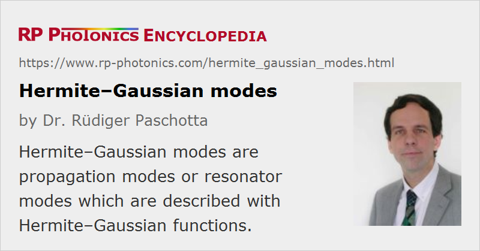

Hermite–Gaussian Modes
Definition: propagation modes or resonator modes which are described with Hermite–Gaussian functions
More general terms: modes
German: Hermite-Gauß-Moden
Categories: general optics, optical resonators
How to cite the article; suggest additional literature
Author: Dr. Rüdiger Paschotta
When light propagates in free space or in a homogeneous optical medium, its intensity profile will generally change during propagation. For certain electric field amplitude distributions, however, which are called modes, this is not the case: the shape of the amplitude profile remains constant, even though there may be a re-scaling of the profile, an overall change in optical phase, and possibly also a change in the total optical power.
For each combination of an optical frequency, a beam axis, a focus position, and some beam radius of a Gaussian beam in the focus, there is a whole family of Hermite–Gaussian modes (TEMnm modes, Gauss–Hermite modes). These are approximate solutions of the wave equation, valid for weak focusing (→ paraxial approximation). Their electric field distributions are essentially given by the product of a Gaussian function and a Hermite polynomial, apart from the phase term:
where Hn(x) is the Hermite polynomial with the non-negative integer index n. The indices n and m determine the shape of the profile in the x and y direction, respectively. The quantities w and R evolve in the z direction as described in the article on Gaussian beams.
The intensity distribution of such a mode (Figure 1) has n nodes in the horizontal direction and m nodes in the vertical direction. For n = m = 0, a Gaussian beam is obtained. This mode is called the fundamental mode or axial mode, and it has the highest beam quality with an M2 factor of 1. Other Hermite–Gaussian modes with indices n and m have an M2 factor of (2n + 1) in the x direction, and (2m + 1) in the y direction.

A further generalization of the equation above would allow for different mode sizes and focus positions (astigmatism) for the x and y directions. The direction of the electric field, not specified in the equation above, determines the polarization.
The electric field distributions of the Hermite–Gaussian modes are a system of functions which are mutually orthogonal. Arbitrary field distributions can be decomposed into Hermite–Gaussian functions, where the amplitude content of each one is determine by an overlap integral.
Hermite–Gaussian modes can often be used to represent the modes of an optical resonator, if the optical elements in the resonator only do simple changes to the phase and intensity profiles (e.g., approximately preserving parabolic phase profiles) and the paraxial approximation is satisfied. As these conditions are very often fulfilled in laser resonators, laser resonator modes are often of Hermite–Gaussian kind. If such a laser operates on a single mode, a characteristic intensity profile of the output beam as in Figure 1 can be observed.
Another frequently used mode family is that of Laguerre–Gaussian modes.
Questions and Comments from Users
Here you can submit questions and comments. As far as they get accepted by the author, they will appear above this paragraph together with the author’s answer. The author will decide on acceptance based on certain criteria. Essentially, the issue must be of sufficiently broad interest.
Please do not enter personal data here; we would otherwise delete it soon. (See also our privacy declaration.) If you wish to receive personal feedback or consultancy from the author, please contact him e.g. via e-mail.
By submitting the information, you give your consent to the potential publication of your inputs on our website according to our rules. (If you later retract your consent, we will delete those inputs.) As your inputs are first reviewed by the author, they may be published with some delay.
See also: modes, higher-order modes, Gaussian beams
and other articles in the categories general optics, optical resonators
|  |
If you like this page, please share the link with your friends and colleagues, e.g. via social media:
These sharing buttons are implemented in a privacy-friendly way!